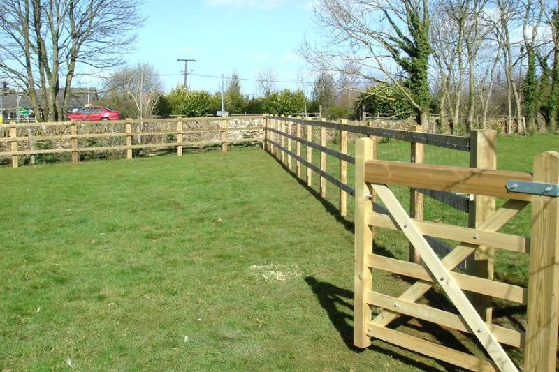

Footage
Acreage lines are long. The material choice matters more here than on a 60-foot backyard.
Farm fences
Farm fencing is for animals and acreage, not for a patio screen. Horses, goats, and a marked pasture line need a different fence than a backyard. A lot of this work is in Corrales, Los Ranchos, Bosque Farms, the South Valley, and on east-mountain parcels.


Use rail, woven wire, no-climb, or pipe when the job is to hold livestock or to keep them off a yard. Post spacing and the wire type follow the animal. A decorative backyard panel will not survive a horse, and a five-strand barbed line is not a residential dog fence.
Many of these properties also have an acequia or an irrigation ditch. The fence has to leave maintenance access. We do not run a line across a ditch and call it finished. If the parcel is a house lot with no animals, look at wood or chain link instead.
Horses, cattle, goats, and a mixed yard do not get the same wire.
Corners, gates for trucks, and any ditch or drive the line has to respect.
Corners and ends carry the tension. Soft river ground and rock are not the same hole.
The gate has to clear a truck, a trailer, or a tractor, and it has to latch in the wind.
We do not publish a price list. These are the details that move an estimate.
Acreage lines are long. The material choice matters more here than on a 60-foot backyard.
A wood rail look, a no-climb horse fence, and a pipe corral are three different prices.
A twelve-foot farm gate is a real part of the job, not a hardware-store afterthought.
Ditch crossings, soft bosque soil, and rocky mesa ground all change the post work.
It is priced by the run, the material, and the gates. A short pipe pen and a long no-climb line around a horse lot are far apart. River-bottom soil and east-mountain rock also change the labor. We walk it before we give a number.
Yes. Horse fence is one of the main reasons this page exists. We use rail, pipe, or a horse-safe wire, with openings a horse should not catch a hoof in. A residential privacy panel around a pasture is the product we will talk you out of.
Yes. Woven or no-climb wire for containment, wood rail where you want the look and a visible barrier, and pipe where the pen takes more abuse. The estimate names which one, and why.
If an acequia or irrigation ditch runs the property, the fence cannot block the people who maintain it. Tell us where the ditch is before the posts go in. We lay the line so animals stay in and ditch access stays open.
Yes. Farm gates are part of the fence, not a separate hobby. We size the opening for the vehicle you actually drive through, and we set the gate posts for that leaf in the wind. A light walk gate on a pasture entrance will fail.